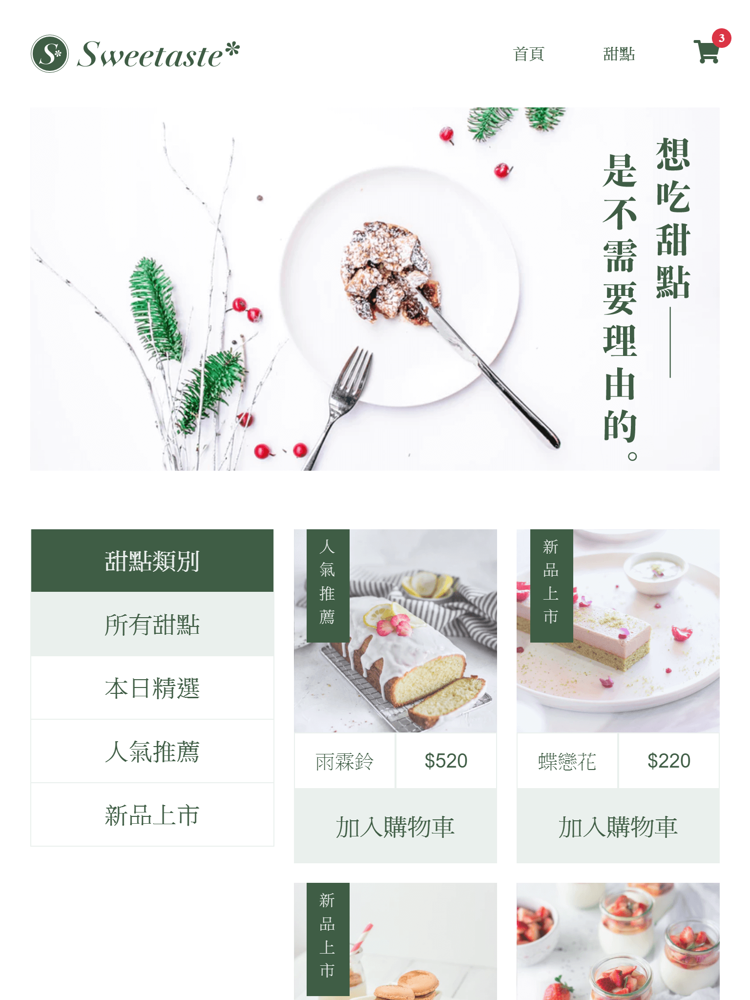
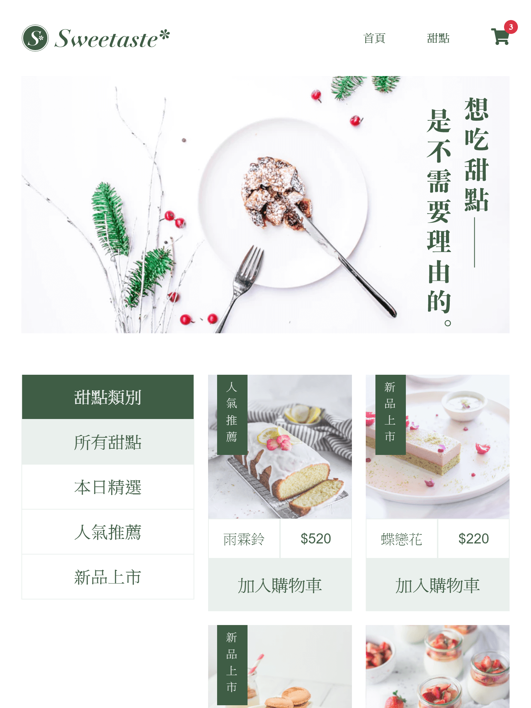
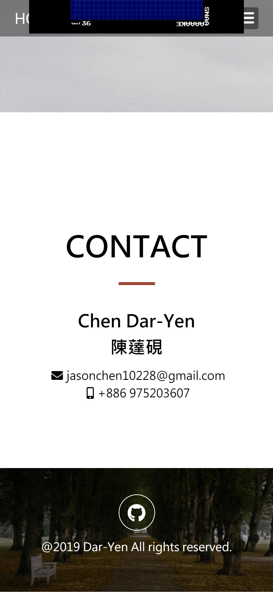
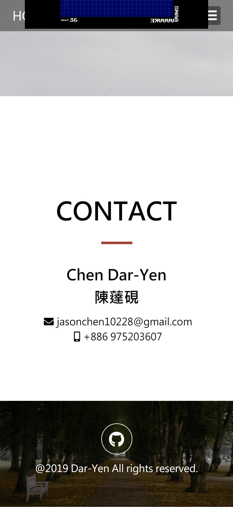

DAR-YEN
PORTFOLIO
Welcome To My Work
FrontEnd Deveopment
我是陳薘硯，以一名網頁前端工程師為目標。
一直到研究所都沉迷於純數領域，對數理邏輯有相當的自信，並擁有獨立思考解決問題的能力。
因為自己同時擁有良好的邏輯能力，也喜歡欣賞自己做出來的成果，未來想跨足後端成為全端工程師
在中央大學時便修習了相當多研究所領域的課程，跟隨數個教授閱讀更高深的理論，這段期間是很開心的，每天忙於閱讀論文，並固定與教授sh4inar，由我講解理論或一同討論問題。主要走的方向為代數數論，代數幾何也有涉略。
大四時獲得教授的認可，擔任大學必修課助教，上助教課還滿好玩的，把自己對數學的理解和樂趣想辦法傳遞給學弟妹們。
課餘的時間，我也是中央大學棒球隊的成員，大三擔任副隊長帶領球隊訓練比賽。
我的碩士並沒有讀完，碩一經過長久的思考，發現並不想以數學為一生的職業，便休學放棄完成碩時學位。
在台大的其間也從事了微積分、線性代數的助教。
在這座台灣最高學府，最好玩的事也是最大的收穫在於能和台灣最好的教授、研究員、學生交流，和這些擁有各種有趣思維的人討論數學，往往都能激發自己很多不同的想法。雖然最後沒有畢業，但在這的時間還是很值得的。
因為自己本身喜歡登山，所以到了登山用品店打工。
在這裡被分配到最主要的任務是管理官網，官網架設在shopline平台上的，可以模組化的設計。老闆給了很大的自由，能盡情的改進官網，我也成功提升了官網的使用者體驗與美觀。同時發現了自己對網頁前端有很大的熱誠。
休學後的這段旅程時徹底的思考了自己，想了各種往後不同的可能,最後決定以網頁前端工程師為目標，並希望最後能成為一名全端工程師。
一個人從挪威奧斯陸出發，經過瑞典、芬蘭，最後抵達了歐洲大陸最北端：挪威北角。走出了台灣這座小島，看看遼闊的世界。
一個半月的時間裡也讓自己更能面對各種突發的意外，在地廣人稀的斯堪地那維亞，很多時候只能靠自己了。
jasonchen10228@gmail.com
+886 975203607
+86 13310852747


 



 
